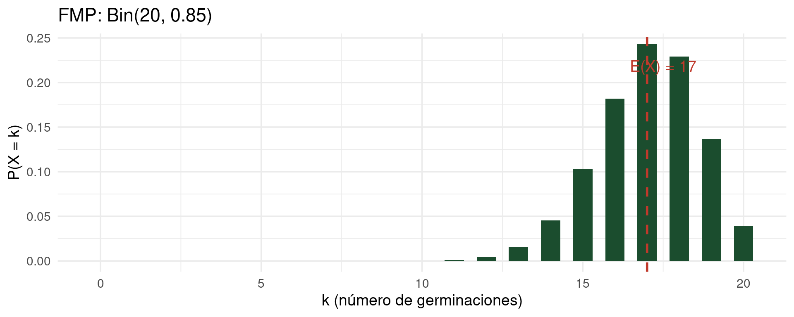
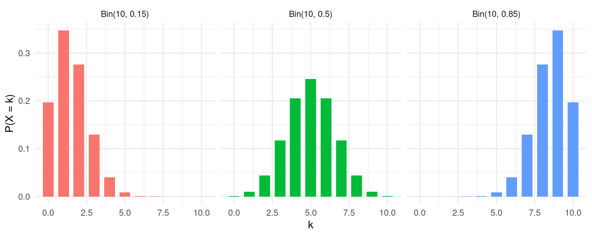

# La Bernoulli es un caso especial de la Binomial con n = 1
p <- 0.30 # probabilidad de éxito (roya)
# Probabilidades puntuales
dbinom(0, size = 1, prob = p) # P(X = 0) = 0.70
dbinom(1, size = 1, prob = p) # P(X = 1) = 0.30
# Esperanza y varianza
E_X <- p
Var_X <- p * (1 - p)
cat("E(X) =", E_X, " Var(X) =", Var_X, "\n")
# Simulación: 10 ensayos Bernoulli
set.seed(42)
rbinom(10, size = 1, prob = p)Bioestadística Fundamental
Departamento de Estadı́stica, Sede Bogotá
Clase 12
Contenido
Parte I: Distribución Bernoulli
- El ensayo de Bernoulli.
- Función de masa de probabilidad.
- Esperanza y varianza.
- Código R.
Parte II: Distribución Binomial
- Definición y condiciones IBIN.
- FMP y FDA.
- Parámetros y propiedades.
- Ejemplos agrícolas y código R.
Distribución Bernoulli y Binomial
Modelando experimentos con dos resultados posibles
Bioestadística Fundamental, Departamento de Estadística, UNAL Bogotá
Motivación: ¿germinó o no germinó?
- En un ensayo de germinación de semillas de maíz, cada semilla puede germinar o no germinar.
- Si la probabilidad de germinación bajo riego tecnificado es del 85%, ¿cuántas de 20 semillas esperamos que germinen?
- ¿Qué probabilidad hay de que germinen exactamente 18?
- Estos experimentos tienen en común: dos resultados posibles (éxito o fracaso), una probabilidad fija de éxito, y repeticiones independientes.
- Las distribuciones Bernoulli y Binomial modelan exactamente estas situaciones.
El ensayo de Bernoulli
Definición: Ensayo de Bernoulli
Un ensayo de Bernoulli es un experimento aleatorio con exactamente dos resultados posibles: éxito (codificado como 1) y fracaso (codificado como 0), donde la probabilidad de éxito es \(p\) y la de fracaso es \(1-p = q\).
- El parámetro \(p \in [0, 1]\) es la probabilidad de éxito.
- Los resultados son mutuamente excluyentes y exhaustivos: \(P(\text{éxito}) + P(\text{fracaso}) = 1\).
- Ejemplos: semilla germina o no, planta enferma o sana, fruto calidad A o B, animal infectado o sano.
Distribución de Bernoulli: definición
Definición: Distribución Bernoulli
Sea \(X\) el resultado de un ensayo de Bernoulli con probabilidad de éxito \(p\). Se dice que \(X \sim \text{Bernoulli}(p)\) si su función de masa de probabilidad es:
\[P(X = x) = p^x (1-p)^{1-x}, \quad x \in \{0, 1\}\]- De forma explícita: \(P(X = 1) = p\) y \(P(X = 0) = 1 - p\).
- La Bernoulli es el caso más simple de variable aleatoria discreta con soporte en \(\{0, 1\}\).
FMP y FDA de la Bernoulli
Función de masa de probabilidad
- \[P(X = 0) = 1 - p, \quad P(X = 1) = p\]
- La suma verifica: \((1-p) + p = 1\). ✓
Función de distribución acumulada
- \[F(x) = \begin{cases} 0 & x < 0 \\ 1-p & 0 \leq x < 1 \\ 1 & x \geq 1 \end{cases}\]
Parámetros de la Bernoulli
Proposición: E(X) y Var(X) de la Bernoulli
Si \(X \sim \text{Bernoulli}(p)\), entonces:
\[E(X) = p \qquad \text{Var}(X) = p(1-p) = pq\]
Demostración
\(E(X) = 0 \cdot (1-p) + 1 \cdot p = p\).
\(E(X^2) = 0^2(1-p) + 1^2 \cdot p = p\).
\(\text{Var}(X) = E(X^2) - [E(X)]^2 = p - p^2 = p(1-p)\). \(\blacksquare\)
- La varianza es máxima cuando \(p = 0.5\) (\(\text{Var}(X) = 0.25\)) y mínima (0) cuando \(p = 0\) o \(p = 1\).
Ejemplo Bernoulli: detección de roya en café
Ejemplo: cultivo de café, Huila
Se selecciona aleatoriamente una planta de café. La probabilidad de que presente roya (Hemileia vastatrix) es \(p = 0.30\). Sea \(X\) = 1 si la planta tiene roya, 0 si no.
- \(X \sim \text{Bernoulli}(0.30)\).
- \(P(X = 1) = 0.30\): hay un 30% de probabilidad de que la planta seleccionada tenga roya.
- \(E(X) = 0.30\): en promedio, el 30% de las plantas en el cultivo tienen roya.
- \(\text{Var}(X) = 0.30 \times 0.70 = 0.21\).
Código R: distribución Bernoulli
En R no existe una función dbernoulli nativa. Se usa dbinom(…, size = 1, …) porque Bernoulli(p) = Binomial(1, p).
De Bernoulli a Binomial: motivación
- ¿Qué ocurre si repetimos el ensayo de Bernoulli \(n\) veces, de forma independiente y con la misma probabilidad \(p\)?
- Ahora nos interesa el número total de éxitos en esas \(n\) repeticiones.
- Ejemplo: inspeccionar 20 semillas de maíz, cada una germina con probabilidad 0.85, independientemente. ¿Cuántas germinan?
- La variable aleatoria \(X\) = «número de éxitos en \(n\) ensayos Bernoulli independientes con probabilidad \(p\)» sigue una distribución Binomial.
- Podemos escribir: \(X = X_1 + X_2 + \cdots + X_n\) donde cada \(X_i \sim \text{Bernoulli}(p)\), independientes.
Condiciones del modelo Binomial (IBIN)
Advertencia: condiciones IBIN
El modelo Binomial es válido solo si se cumplen las cuatro condiciones IBIN:
- Independencia: el resultado de cada ensayo no afecta a los demás.
- Binario: cada ensayo tiene exactamente dos resultados posibles (éxito o fracaso).
- Igual probabilidad: \(p\) es la misma en todos los ensayos.
- Número fijo: el número de ensayos \(n\) es fijo de antemano.
Definición: distribución Binomial
Definición: Distribución Binomial
Sea \(X\) el número de éxitos en \(n\) ensayos Bernoulli independientes con probabilidad de éxito \(p\). Se dice que \(X \sim \text{Bin}(n, p)\) si su función de masa de probabilidad es:
\[P(X = k) = \binom{n}{k} p^k (1-p)^{n-k}, \quad k = 0, 1, \ldots, n\]- \(\binom{n}{k} = \dfrac{n!}{k!(n-k)!}\) es el número de formas de elegir \(k\) éxitos entre \(n\) ensayos.
- \(p^k\) es la probabilidad de obtener exactamente \(k\) éxitos y \((1-p)^{n-k}\) la de \(n-k\) fracasos.
Derivación de la FMP Binomial
Razonamiento combinatorio
Fijemos una secuencia con \(k\) éxitos y \(n-k\) fracasos. Por independencia, su probabilidad es \(p^k(1-p)^{n-k}\). El número de secuencias posibles con exactamente \(k\) éxitos es \(\binom{n}{k}\). Sumando todas las secuencias equivalentes:
\[P(X = k) = \binom{n}{k} p^k (1-p)^{n-k} \quad \blacksquare\]Verificación: \(\sum_{k=0}^{n} \binom{n}{k} p^k (1-p)^{n-k} = [p + (1-p)]^n = 1^n = 1\). (Binomio de Newton.)
Parámetros de la distribución Binomial
Teorema: E(X) y Var(X) de la Binomial
Si \(X \sim \text{Bin}(n, p)\), entonces:
\[E(X) = np \qquad \text{Var}(X) = np(1-p) = npq\]- Intuición: \(E(X) = np\) es el número esperado de éxitos si cada ensayo aporta \(p\) en promedio.
- La desviación estándar es \(\sigma = \sqrt{npq}\).
- Ejemplo: \(\text{Bin}(20, 0.85)\) tiene \(E(X) = 17\) y \(\sigma = \sqrt{20 \times 0.85 \times 0.15} \approx 1.60\).
Derivación: E(X) de la Binomial
Derivación por linealidad
Como \(X = X_1 + \cdots + X_n\) con \(X_i \sim \text{Bernoulli}(p)\) independientes:
\[E(X) = E(X_1 + \cdots + X_n) = E(X_1) + \cdots + E(X_n) = p + \cdots + p = np\] \[\text{Var}(X) = \text{Var}(X_1) + \cdots + \text{Var}(X_n) = pq + \cdots + pq = npq \quad \blacksquare\]Función de distribución acumulada Binomial
Definición: FDA Binomial
\[F(k) = P(X \leq k) = \sum_{j=0}^{k} \binom{n}{j} p^j (1-p)^{n-j}, \quad k = 0, 1, \ldots, n\]
- No tiene forma cerrada sencilla: en la práctica se usa R o tablas.
- Probabilidades complementarias: \(P(X > k) = 1 - F(k)\) y \(P(X \geq k) = 1 - F(k-1)\).
- Probabilidades en un rango: \(P(a \leq X \leq b) = F(b) - F(a-1)\).
Ejemplo aplicado: germinación de maíz
Ejemplo: semillas de maíz, Córdoba
En un lote de 20 semillas de maíz bajo riego tecnificado, cada semilla germina independientemente con probabilidad \(p = 0.85\). Sea \(X\) = número de semillas que germinan.
- \(X \sim \text{Bin}(20, 0.85)\).
- \(E(X) = 20 \times 0.85 = 17\) semillas se esperan que germinen.
- \(\text{Var}(X) = 20 \times 0.85 \times 0.15 = 2.55\), \(\quad \sigma \approx 1.60\).
Cálculo manual: probabilidades puntuales
\(P(X = 18)\)
- \[P(X=18) = \binom{20}{18}(0.85)^{18}(0.15)^{2}\]
- \[= 190 \times (0.85)^{18} \times (0.15)^{2}\]
- \[\approx 190 \times 0.0536 \times 0.0225 \approx 0.229\]
\(P(X \geq 17)\)
- \[P(X \geq 17) = P(X=17) + P(X=18) + P(X=19) + P(X=20)\]
- \[\approx 0.243 + 0.229 + 0.137 + 0.039 \approx 0.648\]
Código R: dbinom y pbinom
[1] 0.2293384[1] 0.6477252[1] 0.6477252 [1] 3.325257e-17 3.801877e-15 2.066795e-13 7.104518e-12 1.732275e-10
[6] 3.185590e-09 4.586073e-08 5.295123e-07 4.983137e-06 3.863275e-05
[11] 2.483820e-04 1.328908e-03 5.921146e-03 2.193510e-02 6.730797e-02
[16] 1.701532e-01 3.522748e-01 5.951037e-01 8.244421e-01 9.612405e-01
[21] 1.000000e+00Gráfica: FMP de la Binomial(20, 0.85)
library(ggplot2)
n <- 20; p <- 0.85
df <- data.frame(k = 0:n, prob = dbinom(0:n, n, p))
ggplot(df, aes(x = k, y = prob)) +
geom_col(fill = "#1b4d2e", width = 0.6) +
geom_vline(xintercept = n * p, color = "#c0392b", linetype = "dashed", linewidth = 1) +
annotate("text", x = n*p + 0.5, y = max(df$prob)*0.9,
label = paste0("E(X) = ", n*p), color = "#c0392b", size = 5) +
labs(x = "k (número de germinaciones)", y = "P(X = k)",
title = "FMP: Bin(20, 0.85)") +
theme_minimal(base_size = 14)
Gráfica: FDA de la Binomial(20, 0.85)
df_fda <- data.frame(k = 0:n, F_k = pbinom(0:n, n, p))
ggplot(df_fda, aes(x = k, y = F_k)) +
geom_step(color = "#1a3a6b", linewidth = 1.2) +
geom_point(color = "#1a3a6b", size = 2.5) +
geom_hline(yintercept = 0.95, color = "#c0392b", linetype = "dashed") +
annotate("text", x = 3, y = 0.97, label = "F(k) = 0.95", color = "#c0392b", size = 5) +
labs(x = "k", y = "F(k) = P(X ≤ k)",
title = "FDA: Bin(20, 0.85)") +
theme_minimal(base_size = 14)
Cuantiles y simulación en R
[1] 14[1] 19[1] 17Media simulada: 17.024 Var simulada: 2.501926 Interpretación de la Binomial
Parámetros en contexto
- \(E(X) = np\) es el número esperado de éxitos. Con \(n=20\) y \(p=0.85\): se esperan 17 germinaciones.
- \(\sigma = \sqrt{npq} \approx 1.60\): el número de germinaciones variará alrededor de 17 en unas 1.6 semillas.
Regla empírica
- Aproximadamente el 95% de los lotes tendrá entre \(np - 2\sigma\) y \(np + 2\sigma\) germinaciones.
- Con \(\text{Bin}(20, 0.85)\): rango \([17 - 3.2,\, 17 + 3.2] = [13.8,\, 20.2]\), es decir, entre 14 y 20.
Ejemplo 2: control de calidad en cultivo de papa
Ejemplo: inspección de tubérculos, Boyacá
En un lote de papa criolla, el 15% de los tubérculos no cumple estándares de calidad. Se seleccionan 10 tubérculos al azar. Sea \(X\) = número de tubérculos fuera de estándar.
- \(X \sim \text{Bin}(10, 0.15)\).
- Calcule: (a) \(P(X = 0)\), (b) \(P(X \leq 2)\), (c) \(P(X \geq 3)\).
- \(E(X) = 10 \times 0.15 = 1.5\), \(\quad \sigma = \sqrt{10 \times 0.15 \times 0.85} \approx 1.13\).
Solución: ejemplo tubérculos de papa
[1] 0.1968744[1] 0.8201965[1] 0.1798035Interpretación: hay un 82% de probabilidad de que a lo sumo 2 de los 10 tubérculos inspeccionados estén fuera de estándar. Este dato es útil para decidir si ampliar o reducir el muestreo de control de calidad.
Forma de la Binomial según p
Asimetría de la distribución
- \(p < 0.5\): distribución sesgada a la derecha (cola hacia valores altos).
- \(p = 0.5\): distribución simétrica alrededor de \(n/2\).
- \(p > 0.5\): distribución sesgada a la izquierda (cola hacia valores bajos).
Efecto de \(n\)
- Al aumentar \(n\), la distribución se vuelve más simétrica y tiende a la forma de campana (Teorema Central del Límite, Clase 19).
- Regla práctica: si \(np \geq 5\) y \(n(1-p) \geq 5\), la aproximación Normal es aceptable.
Visualización: Binomial con distintos parámetros
library(ggplot2); library(tidyverse)
params <- list(c(10, 0.15), c(10, 0.50), c(10, 0.85))
df_multi <- map_dfr(params, function(par) {
tibble(k = 0:par[1],
prob = dbinom(0:par[1], par[1], par[2]),
etiqueta = paste0("Bin(", par[1], ", ", par[2], ")"))
})
ggplot(df_multi, aes(x = k, y = prob, fill = etiqueta)) +
geom_col(position = "dodge", width = 0.7) +
facet_wrap(~etiqueta) +
labs(x = "k", y = "P(X = k)") +
theme_minimal(base_size = 13) + theme(legend.position = "none")
Conexión con la distribución de Poisson
Cuando \(n\) es grande y \(p\) es pequeño, la Binomial(n, p) puede aproximarse por una Poisson(\(\lambda = np\)). Esta aproximación se estudia en detalle en la próxima clase.
- Regla práctica: usar la aproximación si \(n \geq 20\) y \(p \leq 0.05\) (o equivalentemente, \(np \leq 5\)).
- Ejemplo: si el 2% de las semillas en un lote de 500 está contaminada, \(X \approx \text{Poisson}(10)\).
Errores comunes
Advertencia: errores frecuentes
Verifique siempre las condiciones IBIN antes de aplicar el modelo Binomial.
- Dependencia ignorada: seleccionar sin reemplazo en poblaciones pequeñas viola la independencia. Use la distribución hipergeométrica en ese caso.
- \(p\) variable: si la probabilidad de éxito cambia entre ensayos (ej. condiciones de campo distintas), el modelo Binomial no aplica.
-
Confundir \(P(X = k)\) con \(P(X \leq k)\): use
dbinompara probabilidades puntuales ypbinompara acumuladas. -
\(P(X \geq k)\) con
pbinom: recuerde quepbinom(k, …)calcula \(P(X \leq k)\), no \(P(X \geq k)\).
Taller en clase
Taller 1: modelo Bernoulli
Problema
En un ensayo de resistencia a la sequía, una variedad de frijol sobrevive 21 días sin riego con probabilidad \(p = 0.60\). Se selecciona una planta. Sea \(X\) = 1 si sobrevive, 0 si no. Calcule \(P(X = 1)\), \(E(X)\) y \(\text{Var}(X)\).
Taller 1: solución
Taller 2: distribución Binomial
Problema
En un estudio de mastitis bovina en Antioquia, el 25% de las vacas en producción presentan la enfermedad. Se seleccionan 12 vacas al azar. Sea \(X\) = número de vacas con mastitis.
Calcule: (a) \(P(X = 3)\), (b) \(P(X \leq 4)\), (c) \(P(X > 6)\), (d) \(E(X)\) y \(\text{Var}(X)\).
Taller 2: solución
Taller 3: verificación de condiciones IBIN
Problema
Para cada escenario, determine si aplica el modelo Binomial y justifique:
- Se eligen 10 plantas de un invernadero de 30 (sin reemplazo) para detectar mosca blanca.
- Se lanzan 15 semillas de tomate en distintos sustratos; la probabilidad de germinación varía según el sustrato.
- Se inspeccionan 100 frutas de exportación; cada fruta pasa o falla el control de calidad con \(p = 0.08\), independientemente.
Taller 3: solución
- Escenario 1: No aplica Binomial. La extracción sin reemplazo en una población pequeña (30) crea dependencia entre selecciones. Usar distribución hipergeométrica.
- Escenario 2: No aplica Binomial. La probabilidad de éxito no es igual en todos los ensayos (depende del sustrato). Se viola la condición de \(p\) constante.
- Escenario 3: Sí aplica Binomial. Las frutas son independientes, hay dos resultados (pasa/falla), \(p = 0.08\) es constante, y \(n = 100\) está fijo. \(X \sim \text{Bin}(100, 0.08)\).
Resumen: Bernoulli y Binomial
Bernoulli(p)
- Un ensayo, dos resultados.
- \(P(X=1) = p\), \(P(X=0) = 1-p\).
- \(E(X) = p\), \(\text{Var}(X) = pq\).
-
En R:
dbinom(x, 1, p).
Binomial(n, p)
- \(n\) ensayos Bernoulli, IBIN.
- \(P(X=k) = \binom{n}{k}p^k q^{n-k}\).
- \(E(X) = np\), \(\text{Var}(X) = npq\).
-
En R:
dbinom, pbinom, qbinom, rbinom.
Próxima clase
Clase 13: Distribución de Poisson. Modelaremos el número de eventos raros en un intervalo de tiempo o espacio: plagas por hectárea, bacterias por mililitro, defectos por lote.
- Veremos la aproximación Binomial-Poisson y la condición \(n \to \infty\), \(p \to 0\), \(np \to \lambda\).
-
Aprenderemos a calcular probabilidades con
dpois,ppoisen R.